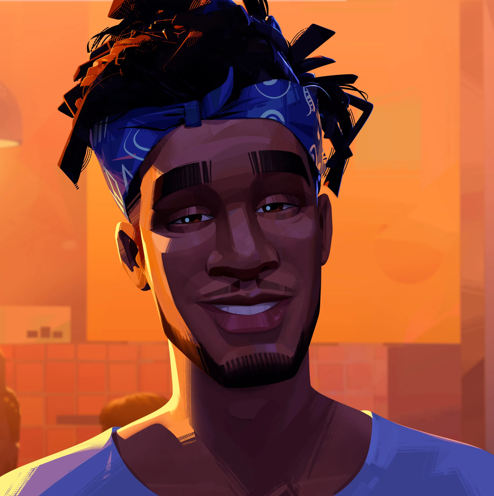
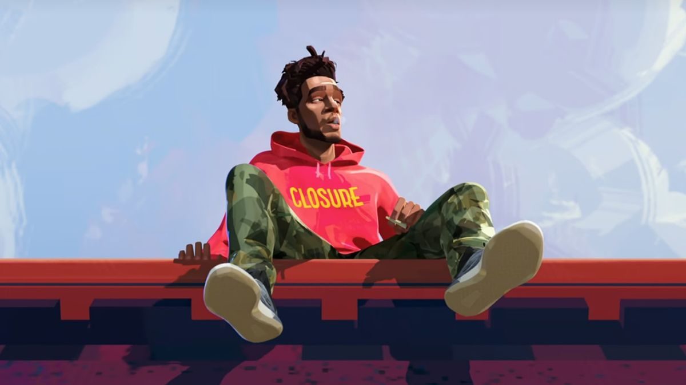
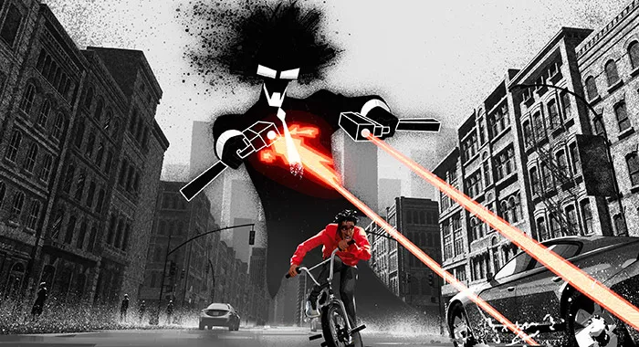
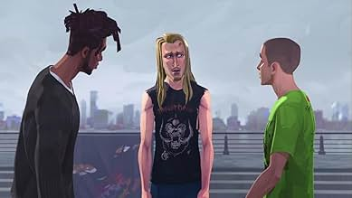
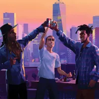
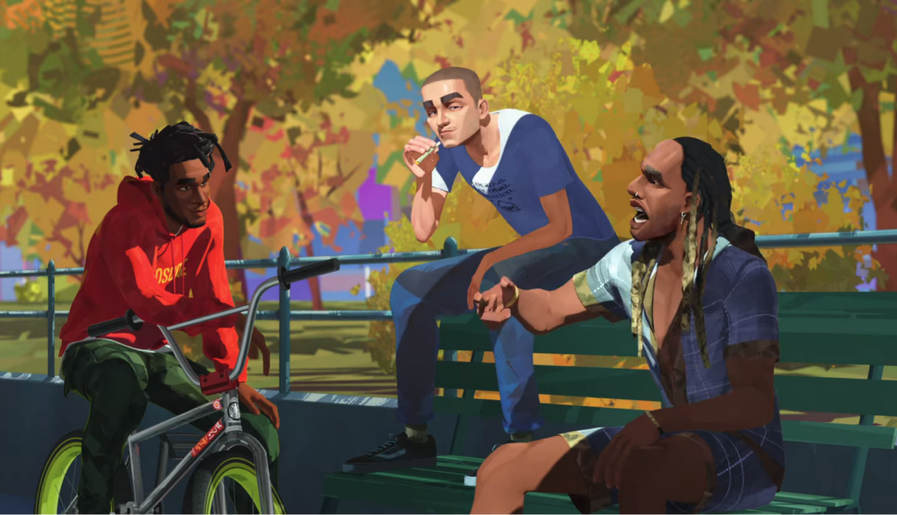

Stoner lover boy
Jabari is a comic book artist, recently moved to Manhattan, battling the ups and downs of young adult life as well as endulging in new and old relationships. His consciousness and problems are portrayed by his signature comic character Mr. Rager. He has a huge interest in modern pop culture, with his outfits as well as loft showing evidence of such. His laid back personality and likeable attitude towards most things makes him a beloved friend and partner.
Jabari is the classic stoner type yet seems to access a lot of his art inspiration through his time inebriated. He likes to hang out with his friends, go to parties, but also spend time one on one time with people he cares about. He could be described as an ambivert in many ways, being both a social butterfly but also one who enjoys the downtime.
Jabari is the original creator and artist of Mr. Rager. A black silhouette character in a black suit, sunglasses, a large afro and a booming personality. He portrays his art as graffiti on walls, billboards, really anywhere he deems suitable for such an influential piece of art.
Jabari has two main homies, Jimmy, who doubles as his weed dealer, and Ky, who is slightly confusing but overall, super chill homie as well. Together they get up to no good, go to parties, converse and tell crazy stories from their past, and more than anything, smoke A LOT of weed. Other friends include Downtown Pat, a homeless bmx biker with a ton of emotion and a lot of problems.
  Mr. Rager Shooting
Roof Top Jabari
Downtown Dan
The Gang
Jabari Close Up
Jonathan